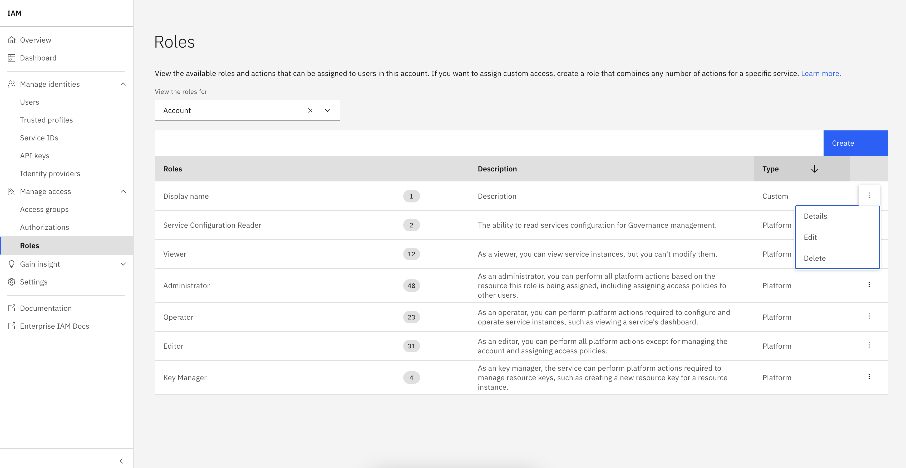
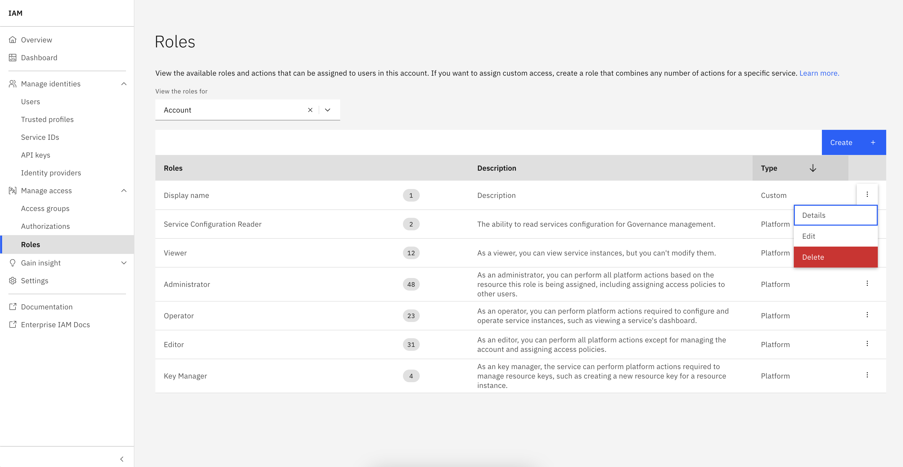

Roles#
Many services map different sets of actions to different platform or service roles. In some cases, you may want to combine multiple roles’ actions to meet your custom use case. With a custom role you can pick and choose the actions required for your use case, making it easier to grant the right access level to a particular service rather than having to assign multiple roles to accomplish the same task. The SDK provides functionality to interact with the roles on the watsonx.data integration platform.
- This includes operations such as:
Creating custom roles
Listing roles
Updating custom roles
Deleting custom roles
Creating custom roles#
Any number of actions for a single service can be mapped to the new role, but there must be at least one service-defined action to successfully create the new role.
In the UI, adding a new custom role can be done by going to Manage -> Access (IAM) -> Manage access -> Create.
You can set a Name, Id, Description, Service and Actions of your custom role.
{kind=link}
{kind=link}
To create a new custom role using the SDK, you can call Platform.create_role() method with name, display_name, service_name and actions parameters. Additionally, you can provide an optional description parameter.
The name parameter must start with a capital letter, be no longer than 30 characters, and must not contain spaces.
For more information about roles and actions see IAM roles and actions.
>>> new_role = platform.create_role(
... name='MyNewRole',
... service_name='iam-groups',
... display_name='New Role',
... actions=['iam-groups.groups.update']
... )
>>> new_role
Role(display_name='New Role', role_type='custom_role', actions=['iam-groups.groups.update'])
Note
This method may raise a requests.exceptions.HTTPError with status code 409 if a role with the same name or display_name or identical set of actions already exists.
Listing roles#
To retrieve system, service and custom roles you can use the Platform.roles property.
>>> platform.roles
[..., Role(display_name='New Role', role_type='custom_role', actions=['iam-groups.groups.update'])...]
- You can filter roles by using the
Platform.roles.get_all()method on thePlatform.rolesproperty and providing any of the following arguments: role_id: The role id.service_name: Name of the IAM enabled service.source_service_name: Name of the source IAM enabled service.policy_type: Type of the policy.service_group_id: Id of the service group.
>>> platform.roles.get_all(role_type='custom_role')
[...Role(display_name='New Role', role_type='custom_role', actions=['iam-groups.groups.update'])]
Updating custom roles#
In the UI, you can update a custom role by clicking three dots next to it and then selecting Edit.
{kind=link}
To update a role using the SDK, first retrieve it by using the Platform.roles property.
Next, make in-memory changes to the object and pass it into the Platform.update_role() method.
>>> new_role.display_name='updated display name'
>>> new_role.description='updated description'
>>> new_role.actions=['iam-groups.groups.create']
>>> platform.update_role(new_role)
<Response [200]>
>>> updated_role = platform.roles.get(role_id=new_role.id)
>>> updated_role
Role(display_name='updated display name', role_type='custom_role', actions=['iam-groups.groups.create'])
Note
You can modify display_name, description or the actions that are mapped to the role. The name, account_id and service_name can’t be changed.
Note
This method may raise a requests.exceptions.HTTPError with status code 409 if a role with either the same display_name or identical set of actions already exists.
Deleting custom roles#
In the UI, you can delete a custom role by clicking three dots next to it and then selecting Delete.
{kind=link}
To delete a role using the SDK, first retrieve it by using Platform.roles property.
Then, pass the object into the Platform.delete_role() method.
>>> platform.delete_role(updated_role)
<Response [204]>